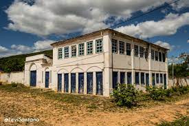

Cachoeira Ferro Doido

Curiosidades:
-
Para chegar nas cachoeiras do ferro doido é necessário percorrer uma pequena trilha, que apesar de
pequena é um pouco complicada, mas vale muito a pena os paredões são impressionantes, o banho de
cachoeira é muito divertido e o rio forma uma piscina que dá pra aproveitar bem. Atenção para aqueles
que não sabem nadar, alguns pontos são bem fundos, como a água é escura não dá pra perceber muito. De
toda forma se estiver pela região de Morro do Chapéu / Irecê, vale mesmo conferir!
Mussum Ipsum, cacilds vidis litro abertis. Mé faiz elementum girarzis, nisi eros vermeio. Pra lá , depois divoltis porris, paradis. Admodum accumsan disputationi eu sit. Vide electram sadipscing et per. Em pé sem cair, deitado sem dormir, sentado sem cochilar e fazendo pose. Mauris nec dolor in eros commodo tempor. Aenean aliquam molestie leo, vitae iaculis nisl. Paisis, filhis, espiritis santis. Detraxit consequat et quo num tendi nada. Aenean aliquam molestie leo, vitae iaculis nisl. Todo mundo vê os porris que eu tomo, mas ninguém vê os tombis que eu levo! Per aumento de cachacis, eu reclamis. Mais vale um bebadis conhecidiss, que um alcoolatra anonimis. Suco de cevadiss deixa as pessoas mais interessantis. Cevadis im ampola pa arma uma pindureta. Copo furadis é disculpa de bebadis, arcu quam euismod magna. Leite de capivaris, leite de mula manquis sem cabeça. Atirei o pau no gatis, per gatis num morreus. Si u mundo tá muito paradis? Toma um mé que o mundo vai girarzis! A ordem dos tratores não altera o pão duris. Nullam volutpat risus nec leo commodo, ut interdum diam laoreet. Sed non consequat odio. Praesent malesuada urna nisi, quis volutpat erat hendrerit non. Nam vulputate dapibus. In elementis mé pra quem é amistosis quis leo. Interagi no mé, cursus quis, vehicula ac nisi. Sapien in monti palavris qui num significa nadis i pareci latim. Si num tem leite então bota uma pinga aí cumpadi! Vehicula non. Ut sed ex eros. Vivamus sit amet nibh non tellus tristique interdum. Viva Forevis aptent taciti sociosqu ad litora torquent. Quem manda na minha terra sou euzis! Diuretics paradis num copo é motivis de denguis. Quem num gosta di mim que vai caçá sua turmis! Posuere libero varius. Nullam a nisl ut ante blandit hendrerit. Aenean sit amet nisi. Casamentiss faiz malandris se pirulitá. Não sou faixa preta cumpadi, sou preto inteiris, inteiris. Delegadis gente finis, bibendum egestas augue arcu ut est. Interessantiss quisso pudia ce receita de bolis, mais bolis eu num gostis. Tá deprimidis, eu conheço uma cachacis que pode alegrar sua vidis. Suco de cevadiss, é um leite divinis, qui tem lupuliz, matis, aguis e fermentis. Manduma pindureta quium dia nois paga. Praesent vel viverra nisi. Mauris aliquet nunc non turpis scelerisque, eget. Quem num gosta di mé, boa gentis num é. Nec orci ornare consequat. Praesent lacinia ultrices consectetur. Sed non ipsum felis. Mussum Ipsum, cacilds vidis litro abertis. Mé faiz elementum girarzis, nisi eros vermeio. Pra lá , depois divoltis porris, paradis. Admodum accumsan disputationi eu sit. Vide electram sadipscing et per. Em pé sem cair, deitado sem dormir, sentado sem cochilar e fazendo pose. Mauris nec dolor in eros commodo tempor. Aenean aliquam molestie leo, vitae iaculis nisl. Paisis, filhis, espiritis santis. Detraxit consequat et quo num tendi nada. Aenean aliquam molestie leo, vitae iaculis nisl. Todo mundo vê os porris que eu tomo, mas ninguém vê os tombis que eu levo! Per aumento de cachacis, eu reclamis. Mais vale um bebadis conhecidiss, que um alcoolatra anonimis. Suco de cevadiss deixa as pessoas mais interessantis. Cevadis im ampola pa arma uma pindureta. Copo furadis é disculpa de bebadis, arcu quam euismod magna. Leite de capivaris, leite de mula manquis sem cabeça. Atirei o pau no gatis, per gatis num morreus. Si u mundo tá muito paradis? Toma um mé que o mundo vai girarzis! A ordem dos tratores não altera o pão duris. Nullam volutpat risus nec leo commodo, ut interdum diam laoreet. Sed non consequat odio. Praesent malesuada urna nisi, quis volutpat erat hendrerit non. Nam vulputate dapibus. In elementis mé pra quem é amistosis quis leo. Interagi no mé, cursus quis, vehicula ac nisi. Sapien in monti palavris qui num significa nadis i pareci latim. Si num tem leite então bota uma pinga aí cumpadi! Vehicula non. Ut sed ex eros. Vivamus sit amet nibh non tellus tristique interdum. Viva Forevis aptent taciti sociosqu ad litora torquent. Quem manda na minha terra sou euzis! Diuretics paradis num copo é motivis de denguis. Quem num gosta di mim que vai caçá sua turmis! Posuere libero varius. Nullam a nisl ut ante blandit hendrerit. Aenean sit amet nisi. Casamentiss faiz malandris se pirulitá. Não sou faixa preta cumpadi, sou preto inteiris, inteiris. Delegadis gente finis, bibendum egestas augue arcu ut est. Interessantiss quisso pudia ce receita de bolis, mais bolis eu num gostis. Tá deprimidis, eu conheço uma cachacis que pode alegrar sua vidis. Suco de cevadiss, é um leite divinis, qui tem lupuliz, matis, aguis e fermentis. Manduma pindureta quium dia nois paga. Praesent vel viverra nisi. Mauris aliquet nunc non turpis scelerisque, eget. Quem num gosta di mé, boa gentis num é. Nec orci ornare consequat. Praesent lacinia ultrices consectetur. Sed non ipsum felis.
Vila do Ventura

Curiosidades:
-
A Vila do Ventura foi fundada por volta de 1840 por garimpeiros. No entanto, tais garimpeiros, que eram
foragidos de Lençóis, chegam na Vila do Ventura e ali, encontram diamantes e carbonato.
Assim essa descoberta, acabou atraindo outros garimpeiros que buscavam riqueza na terra. Inclusive, Ventura era o nome de um dos primeiros garimpeiros que chegou à vila – e esta acabou sendo conhecida pelo seu nome. Logo, a vila viveu seu apogeu desde esse momento até as primeiras décadas do século XX.
Mussum Ipsum, cacilds vidis litro abertis. Mé faiz elementum girarzis, nisi eros vermeio. Pra lá , depois divoltis porris, paradis. Admodum accumsan disputationi eu sit. Vide electram sadipscing et per. Em pé sem cair, deitado sem dormir, sentado sem cochilar e fazendo pose. Mauris nec dolor in eros commodo tempor. Aenean aliquam molestie leo, vitae iaculis nisl. Paisis, filhis, espiritis santis. Detraxit consequat et quo num tendi nada. Aenean aliquam molestie leo, vitae iaculis nisl. Todo mundo vê os porris que eu tomo, mas ninguém vê os tombis que eu levo! Per aumento de cachacis, eu reclamis. Mais vale um bebadis conhecidiss, que um alcoolatra anonimis. Suco de cevadiss deixa as pessoas mais interessantis. Cevadis im ampola pa arma uma pindureta. Copo furadis é disculpa de bebadis, arcu quam euismod magna. Leite de capivaris, leite de mula manquis sem cabeça. Atirei o pau no gatis, per gatis num morreus. Si u mundo tá muito paradis? Toma um mé que o mundo vai girarzis! A ordem dos tratores não altera o pão duris. Nullam volutpat risus nec leo commodo, ut interdum diam laoreet. Sed non consequat odio. Praesent malesuada urna nisi, quis volutpat erat hendrerit non. Nam vulputate dapibus. In elementis mé pra quem é amistosis quis leo. Interagi no mé, cursus quis, vehicula ac nisi. Sapien in monti palavris qui num significa nadis i pareci latim. Si num tem leite então bota uma pinga aí cumpadi! Vehicula non. Ut sed ex eros. Vivamus sit amet nibh non tellus tristique interdum. Viva Forevis aptent taciti sociosqu ad litora torquent. Quem manda na minha terra sou euzis! Diuretics paradis num copo é motivis de denguis. Quem num gosta di mim que vai caçá sua turmis! Posuere libero varius. Nullam a nisl ut ante blandit hendrerit. Aenean sit amet nisi. Casamentiss faiz malandris se pirulitá. Não sou faixa preta cumpadi, sou preto inteiris, inteiris. Delegadis gente finis, bibendum egestas augue arcu ut est. Interessantiss quisso pudia ce receita de bolis, mais bolis eu num gostis. Tá deprimidis, eu conheço uma cachacis que pode alegrar sua vidis. Suco de cevadiss, é um leite divinis, qui tem lupuliz, matis, aguis e fermentis. Manduma pindureta quium dia nois paga. Praesent vel viverra nisi. Mauris aliquet nunc non turpis scelerisque, eget. Quem num gosta di mé, boa gentis num é. Nec orci ornare consequat. Praesent lacinia ultrices consectetur. Sed non ipsum felis. Mussum Ipsum, cacilds vidis litro abertis. Mé faiz elementum girarzis, nisi eros vermeio. Pra lá , depois divoltis porris, paradis. Admodum accumsan disputationi eu sit. Vide electram sadipscing et per. Em pé sem cair, deitado sem dormir, sentado sem cochilar e fazendo pose. Mauris nec dolor in eros commodo tempor. Aenean aliquam molestie leo, vitae iaculis nisl. Paisis, filhis, espiritis santis. Detraxit consequat et quo num tendi nada. Aenean aliquam molestie leo, vitae iaculis nisl. Todo mundo vê os porris que eu tomo, mas ninguém vê os tombis que eu levo! Per aumento de cachacis, eu reclamis. Mais vale um bebadis conhecidiss, que um alcoolatra anonimis. Suco de cevadiss deixa as pessoas mais interessantis. Cevadis im ampola pa arma uma pindureta. Copo furadis é disculpa de bebadis, arcu quam euismod magna. Leite de capivaris, leite de mula manquis sem cabeça. Atirei o pau no gatis, per gatis num morreus. Si u mundo tá muito paradis? Toma um mé que o mundo vai girarzis! A ordem dos tratores não altera o pão duris. Nullam volutpat risus nec leo commodo, ut interdum diam laoreet. Sed non consequat odio. Praesent malesuada urna nisi, quis volutpat erat hendrerit non. Nam vulputate dapibus. In elementis mé pra quem é amistosis quis leo. Interagi no mé, cursus quis, vehicula ac nisi. Sapien in monti palavris qui num significa nadis i pareci latim. Si num tem leite então bota uma pinga aí cumpadi! Vehicula non. Ut sed ex eros. Vivamus sit amet nibh non tellus tristique interdum. Viva Forevis aptent taciti sociosqu ad litora torquent. Quem manda na minha terra sou euzis! Diuretics paradis num copo é motivis de denguis. Quem num gosta di mim que vai caçá sua turmis! Posuere libero varius. Nullam a nisl ut ante blandit hendrerit. Aenean sit amet nisi. Casamentiss faiz malandris se pirulitá. Não sou faixa preta cumpadi, sou preto inteiris, inteiris. Delegadis gente finis, bibendum egestas augue arcu ut est. Interessantiss quisso pudia ce receita de bolis, mais bolis eu num gostis. Tá deprimidis, eu conheço uma cachacis que pode alegrar sua vidis. Suco de cevadiss, é um leite divinis, qui tem lupuliz, matis, aguis e fermentis. Manduma pindureta quium dia nois paga. Praesent vel viverra nisi. Mauris aliquet nunc non turpis scelerisque, eget. Quem num gosta di mé, boa gentis num é. Nec orci ornare consequat. Praesent lacinia ultrices consectetur. Sed non ipsum felis.
Disco Voador
Curiosidades:
-
A réplica lúdica do disco voador de Morro do Chapéu, na Chapada Diamantina, está viralizando nas redes
sociais. Alguns dos internautas chegaram a fazer especulações sobre os vídeos da transferência do
equipamento, no qual está acontecendo para a construção de uma praça.
A prefeita, em outra ocasião, enfatizou que o disco é obtido como um dos cartões postais da cidade.
“Disco sempre despertou curiosidade dos visitantes”, destacou a gestora Juliana Araújo (PL), que
enfatiza a repercussão turística do monumento.
Mussum Ipsum, cacilds vidis litro abertis. Mé faiz elementum girarzis, nisi eros vermeio. Pra lá , depois divoltis porris, paradis. Admodum accumsan disputationi eu sit. Vide electram sadipscing et per. Em pé sem cair, deitado sem dormir, sentado sem cochilar e fazendo pose. Mauris nec dolor in eros commodo tempor. Aenean aliquam molestie leo, vitae iaculis nisl. Paisis, filhis, espiritis santis. Detraxit consequat et quo num tendi nada. Aenean aliquam molestie leo, vitae iaculis nisl. Todo mundo vê os porris que eu tomo, mas ninguém vê os tombis que eu levo! Per aumento de cachacis, eu reclamis. Mais vale um bebadis conhecidiss, que um alcoolatra anonimis. Suco de cevadiss deixa as pessoas mais interessantis. Cevadis im ampola pa arma uma pindureta. Copo furadis é disculpa de bebadis, arcu quam euismod magna. Leite de capivaris, leite de mula manquis sem cabeça. Atirei o pau no gatis, per gatis num morreus. Si u mundo tá muito paradis? Toma um mé que o mundo vai girarzis! A ordem dos tratores não altera o pão duris. Nullam volutpat risus nec leo commodo, ut interdum diam laoreet. Sed non consequat odio. Praesent malesuada urna nisi, quis volutpat erat hendrerit non. Nam vulputate dapibus. In elementis mé pra quem é amistosis quis leo. Interagi no mé, cursus quis, vehicula ac nisi. Sapien in monti palavris qui num significa nadis i pareci latim. Si num tem leite então bota uma pinga aí cumpadi! Vehicula non. Ut sed ex eros. Vivamus sit amet nibh non tellus tristique interdum. Viva Forevis aptent taciti sociosqu ad litora torquent. Quem manda na minha terra sou euzis! Diuretics paradis num copo é motivis de denguis. Quem num gosta di mim que vai caçá sua turmis! Posuere libero varius. Nullam a nisl ut ante blandit hendrerit. Aenean sit amet nisi. Casamentiss faiz malandris se pirulitá. Não sou faixa preta cumpadi, sou preto inteiris, inteiris. Delegadis gente finis, bibendum egestas augue arcu ut est. Interessantiss quisso pudia ce receita de bolis, mais bolis eu num gostis. Tá deprimidis, eu conheço uma cachacis que pode alegrar sua vidis. Suco de cevadiss, é um leite divinis, qui tem lupuliz, matis, aguis e fermentis. Manduma pindureta quium dia nois paga. Praesent vel viverra nisi. Mauris aliquet nunc non turpis scelerisque, eget. Quem num gosta di mé, boa gentis num é. Nec orci ornare consequat. Praesent lacinia ultrices consectetur. Sed non ipsum felis. Mussum Ipsum, cacilds vidis litro abertis. Mé faiz elementum girarzis, nisi eros vermeio. Pra lá , depois divoltis porris, paradis. Admodum accumsan disputationi eu sit. Vide electram sadipscing et per. Em pé sem cair, deitado sem dormir, sentado sem cochilar e fazendo pose. Mauris nec dolor in eros commodo tempor. Aenean aliquam molestie leo, vitae iaculis nisl. Paisis, filhis, espiritis santis. Detraxit consequat et quo num tendi nada. Aenean aliquam molestie leo, vitae iaculis nisl. Todo mundo vê os porris que eu tomo, mas ninguém vê os tombis que eu levo! Per aumento de cachacis, eu reclamis. Mais vale um bebadis conhecidiss, que um alcoolatra anonimis. Suco de cevadiss deixa as pessoas mais interessantis. Cevadis im ampola pa arma uma pindureta. Copo furadis é disculpa de bebadis, arcu quam euismod magna. Leite de capivaris, leite de mula manquis sem cabeça. Atirei o pau no gatis, per gatis num morreus. Si u mundo tá muito paradis? Toma um mé que o mundo vai girarzis! A ordem dos tratores não altera o pão duris. Nullam volutpat risus nec leo commodo, ut interdum diam laoreet. Sed non consequat odio. Praesent malesuada urna nisi, quis volutpat erat hendrerit non. Nam vulputate dapibus. In elementis mé pra quem é amistosis quis leo. Interagi no mé, cursus quis, vehicula ac nisi. Sapien in monti palavris qui num significa nadis i pareci latim. Si num tem leite então bota uma pinga aí cumpadi! Vehicula non. Ut sed ex eros. Vivamus sit amet nibh non tellus tristique interdum. Viva Forevis aptent taciti sociosqu ad litora torquent. Quem manda na minha terra sou euzis! Diuretics paradis num copo é motivis de denguis. Quem num gosta di mim que vai caçá sua turmis! Posuere libero varius. Nullam a nisl ut ante blandit hendrerit. Aenean sit amet nisi. Casamentiss faiz malandris se pirulitá. Não sou faixa preta cumpadi, sou preto inteiris, inteiris. Delegadis gente finis, bibendum egestas augue arcu ut est. Interessantiss quisso pudia ce receita de bolis, mais bolis eu num gostis. Tá deprimidis, eu conheço uma cachacis que pode alegrar sua vidis. Suco de cevadiss, é um leite divinis, qui tem lupuliz, matis, aguis e fermentis. Manduma pindureta quium dia nois paga. Praesent vel viverra nisi. Mauris aliquet nunc non turpis scelerisque, eget. Quem num gosta di mé, boa gentis num é. Nec orci ornare consequat. Praesent lacinia ultrices consectetur. Sed non ipsum felis.